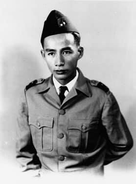
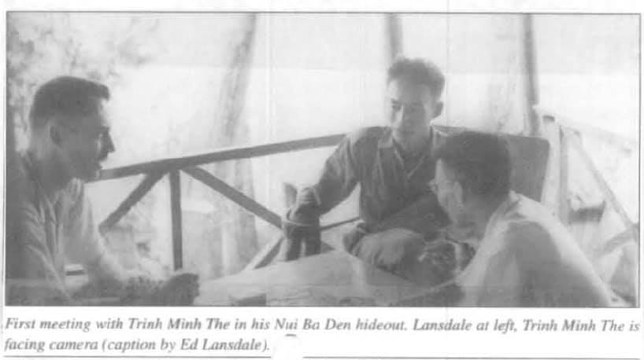
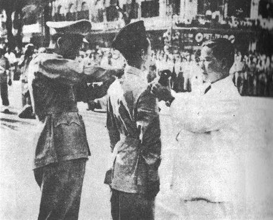

Nếu có những hành động nào của tôi trong năm 54 làm cho những người Pháp ở Saigon thích ngồi lê đôi mách phải nói luôn mồm, thì đó là việc tôi quen biết với con người lãnh tụ du kích ly kỳ Trình Minh Thế. Việc này khiến cho họ xúc động như một vụ sì-căng-đan, vì một người Mỹ đã dám gặp một con người từng bị người Pháp loại ra ngoài vòng pháp luật. Một chiến binh xuất thân là một thanh niên nông thôn, tự tổ chức du kích chiến đấu cho nền độc lập của VN, Trình Minh Thế đã liều lĩnh đánh cả thực dân Pháp lẫn Cộng Sản. Dưới mắt kẻ thù, ông được coi là người đáng sợ nhứt, ông đã đạt được nhiều thắng lợi đáng kể. Khi tôi gặp ông ta lần đầu, thì lúc đó lính Pháp vẫn đang cố săn đuổi ông, cũng như bộ đội VM. Cả hai bên đều muốn giết ông.
Cuộc gặp gỡ đầu tiên giữa tôi và Trình Minh Thế bắt nguồn từ một lần ngồi nói chuyện với ông Diệm hồi mùa thu 1954. Vụ rắc rối với ông Hinh lúc đó đang ở thời kỳ trầm trọng nhất. Ông Diệm nhắc tôi về đề nghị của tôi đối với việc sát nhập các quân đội giáo phái vào quân đội VN để tạo một quân đội quốc gia duy nhất. Tôi có thành tâm tin rằng việc này thực hiện được hay không và nếu quân đội giáo phái được đồng hóa vào quận đội quốc gia, thì có giải quyết được các khó khăn không?
Tôi đồng ý rằng vấn đề quân sự lúc này rắc rối lộn xộn, dù rằng các viên chức hữu trách Pháp cũng đã chán nản Tướng Hinh và tham vọng của ông ta. Bỏ vụ Hinh qua một bên, ông Diệm sẽ phải chọn lựa giải pháp nào. Thật là một thử thách lớn cho chính phủ nếu các lực lượng giáo phái củng cố vững chắc các lãnh địa của họ. Tìm cách giải tán những lực lượng này là một việc làm rắc rối, nguy hiểm về kỹ thuật cũng như về chính trị. Thế nhưng với quá nhiều sứ quân ở khắp nơi như vậy, Nam VN sẽ ở trong một tình trạng chính trị nát bấy. Theo hiệp định Genève thì chẳng còn được bao nhiêu ngày giờ để sửa soạn cho miền Nam trước cuộc Tổng Tuyển Cử dự định. Ông Diệm phải làm bất cứ cái gì làm được và ngay khi nào làm được, chứ không thể ngồi yên mà chờ đến lúc an toàn nhất hoặc thời cơ tốt đẹp nhất mới làm. Một quân đội duy nhất, thống nhất là một nhu cầu cấp bách của quốc gia..
Ông Diệm nhìn tôi một lúc lâu không nói gì. Sau đó ông hỏi tôi có biết gì về Trình Minh Thế không? Tôi trả lời rằng tôi có được nghe nhưng phần lớn là qua miệng những sĩ quan Pháp vốn ác cảm với Trình Minh Thế nên những điều do họ mô tả thường có vẻ quá đáng. Ông Diệm liền nói không suy nghĩ rằng ông coi Trình Minh Thế là một người yêu nước thực sự, một lãnh tụ quốc gia mà ông cần phải hợp tác nếu những người VN không Cộng Sản muốn có một tương lai sáng sủa hơn. Ông Diệm cho tôi biết về uy tín của Trình Minh Thế tại miền Tây Nam Phần VN và cho rằng nếu chính quyền được Trình Minh Thế ủng hộ thì cán cân thế lực sẽ nghiêng hẳn về phía ông Diệm. Ông Nhu và ông Luyện đã tiếp xúc với đại diện của Trình Minh Thế ở Sàigòn và Trình Minh Thế tỏ ý thuận hợp tác với ông Diệm vì chính nghĩa quốc gia.
Ông Diệm muốn nhờ tôi trao cho Trinh Minh Thế một thơ riêng. Vì các lực lượng Pháp vẫn còn bao vây các cánh quân du kích của Trình Minh Thế nên ông Diệm khó có thể đến gặp tận mặt được. Tôi là người Mỹ, tôi có thể gặp Trình Minh Thế trực tiếp trong khi ông Diệm hoặc các em ông không thể gặp được như vậy. Vấn đề chính trong lá thơ là đề nghị sát nhập các lực lượng của Trình Minh Thế và quân đội quốc gia ngay sau khi các thỏa hiệp được chấp nhận. Chắc chắn tôi có thể thuyết phục Trình Minh Thế về vấn đề này. Ông Diệm sẽ để lá thơ bỏ ngỏ cho tôi đọc trước khi trao thơ để hiểu rõ vấn đề hơn.
Tôi tỏ ý thích được gặp trực tiếp con người lãnh tụ du kích này để thỏa mãn trí tò mò và để trao lá thư ấy. Nhưng chỉ có một vấn đề khó khăn là làm sao được chính quyền Mỹ chấp nhận cho tôi làm việc này, ít ra là phải đợi vài ba ngày. Ông Diệm cho biết ông cũng cần một đôi ngày để dàn xếp với Trình Minh Thế để gặp tôi, vì tôi là người Mỹ thứ nhất gặp ông ta và du kích T.M.Thế là những kẻ rất bài ngoại, bằng chứng rõ ràng nhất là việc họ chống lại người Pháp hiện nay. Ông Diệm dặn tôi phải hành động kín đáo, vì sợ rằng người Pháp sẽ biết vụ gặp gỡ này và có thể họ sẽ tìm cách phục kích tôi hoặc áp dụng nhiều biện pháp khác để ngăn cản cuộc hội kiến với Trình Minh Thế.
Tôi đem việc ông Diệm đề nghị ra bàn với Đại Sứ Heath. Chúng tôi đồng ý rằng sự ủng hộ của Trình Minh Thế đối với ông Diệm có thể làm cho vị trí chính trị của ông Diệm thay đổi một cách hữu ích và mở đầu cho những hành động tương tự của những lực lượng khác ở VN. Tướng O’Daniel thì rất tán thành việc sát nhập mọi lực lượng quân sự vào trong một quân đội quốc gia duy nhất. Vụ này được trình về HoaThịnh Đốn bằng vô tuyến điện. Vài ngày sau Hoa Thịnh Đốn báo tin chấp thuận. Tôi thông báo cho ông Diệm, và được ông cho biết đang dàn xếp lần chót việc tôi đến gặp Trình Minh Thế.
Kế đó 2 ngày, tôi tổ chức một cuộc họp với 5 người Mỹ trong toán tôi. Họ xin tôi đi theo vì cũng tò mò như tôi muốn được thấy những du kích quân VN này thế nào. Chúng tôi bận quần áo thể thao thường dân như trong một buổi đi chơi. Một vài người dắt theo súng lục dấu dưới áo sơ-mi. Tôi để khẩu súng ngay dưới sàn xe vừa trong tầm tay. Đi theo chúng tôi có một viên chức của chính phủ VN mà ông Diệm đã giới thiệu cho tôi. Người này diện như lúc đi làm ở Saigon, com-lê trắng với cà vạt đen. Ông ta đoan chắc với tôi bằng một giọng nói có vẻ lo lắng rằng ông ta sẽ liên lạc được với các anh em du kích. Một vài người Mỹ đi theo tôi nhận thấy ngay vẻ lo ngại ấy, nên họ xầm xì với nhau tỏ vẻ không mấy tin tưởng người VN này. Nơi chúng tôi đến là một ấp ở xa Saigon khoảng 100 cây số, qua khỏi Tây Ninh và sát với biên giới Cambốt. Trong khi lái xe dọc theo Q.L l dưới ánh nắng sớm, vượt qua những tháp canh chơ vơ và những đồn bót nhỏ ven đường trên đồng lúa, rồi ngược lên phía Bắc theo Q.L 22 qua các đồn điền cao su Vên Vên, Trà Võ, tôi hồi tưởng lại những điều tôi được nghe về Trình Minh Thế và đám du kích quân của ông.
Những điều hiểu biết của tôi không được rõ ràng lắm và bị phân chia thành hai phần trái ngược nhau. Đi với người Pháp thì Trình Minh Thế là kẻ phản phúc, là con quỉ sứ giảo quyệt đã hạ sát tướng Chanson của họ vào năm 195l và đã phá nổ một chiếc xe ngay trước Nhà Hát Lớn Saigon năm 1953 làm thiệt mạng một số bộ hành vô tội. Đối với nhiều người VN thì ông ta lại là một Robin Hood (nhân vật hiệp sĩ trong huyền thoại nước Anh, chuyên làm việc nghĩa giúp kẻ nghèo khó), là một người yêu nước khao khát vì độc lập của quốc gia đã chiến đấu thành công chống lại cả Pháp lẫn Cộng Sản, và là người đã mang lại nhiều tiến bộ cụ thể về trật tự xã hội cho các thôn xóm trong vùng quân ông chiếm đóng. (Ngay cả nhiều sĩ quan Pháp có ác cảm với ông cũng phải công nhận với tôi rằng ông ta rất thành tín đối với dân chúng dưới quyền). Lực lượng du kích của ông được ước lượng khoảng từ 500 tay súng cho tới một con số hơi phong phú một chút là 10.000 (Về sau tôi được biết ông có tất cả 2.500 chiến sĩ).
Trong thời gian kế tiếp sau đó, tôi được biết thêm một số chi tiết về cuộc đời của người lãnh tụ quốc gia này. Ông ta đã sống một cuộc đời thật sôi nổi với 32 tuổi đời. Rời bỏ gia đình ở nông thôn từ năm 2l tuổi, ông ta đã theo các bạn VN khác đi dự huấn luyện về du kích trong những trại huấn luyện bí mật của Mật Vụ Nhật, tại Cam Bốt và Lào. Năm 1945, ông ta là một sĩ quan trong đại đội Cao Đài bí mật thành lập tại Xưởng Đóng Tàu Saigon và tham dự vào cuộc đảo chính của quân Nhật lật đổ chính quyền thuộc địa Pháp vào tháng 3. Khi lực lượng Liên Hiệp Pháp trở lại VN, sau Thế Chiến II, ông cùng các chiến sĩ Cao Đài khác theo kháng chiến chống Pháp. Bất mãn với Cộng Sản vì những vụ phản bội và thanh trừng, Cao Đài rời bỏ VM năm 1947 trở về tổ chức thành một lực lượng tự vệ dưới sự bảo trợ của người Pháp để bảo vệ tập thể giáo dân của mình. Trình Minh Thế lúc ấy là Tham Mưu Trưởng của quân đội Cao Đài.

.Thành công quân sự đầu tiên của ông là một kết quả kỳ khôi của thời gian được người Nhật huấn luyện. Năm 1949, ông tổ chức 12 trung đội lưu động và thực hiện một chiến dịch chớp nhoáng chống lại VM của Tướng Nguyễn Bình, vị chỉ huy Cộng Sản Khu Đông Nam Bộ. Ông ta và Nguyễn Bình là bạn học cùng lớp trong trường huấn luyện du kích chiến của người Nhật. Tại đây họ đã cùng nghiên cứu về những kế hoạch hành quân cho vùng Nam VN. Trong chiến dịch 1949, Trình Minh Thế nhận thấy Nguyễn Bình đã áp dụng lại kế hoạch cũ mà ông cũng như Nguyễn Bình đều biết rõ, do đó ông đã hoạt động dựa theo kế hoạch ấy. Những trung đội Cao Đài lưu động tấn công VM bất ngờ và đánh tan các đơn vị của họ. (Sau thất bại này, Nguyễn Bình và lực lượng còn lại bị phản bội, bị bán đứng cho Pháp. Tôi nghe nói vụ bán đứng này do Lê Duẫn sắp đặt theo yêu cầu của Hồ Chí Minh, là một phần trong kế hoạch thanh trừng của Cộng Sản).
Chiến đấu chống Cộng Sản đe dọa Cao Đài là một chuyện, nhưng chiến đấu dưới lá cờ Pháp lại là điều mà Trình Minh Thế chán ghét. Ông cho rằng Cao Đài phải tham dự vào việc tranh đấu dành độc lập nhưng không thể phục vụ cho chế độ thuộc địa Pháp. Năm 195l ông rời bỏ quân đội Cao Đài và tổ chức một phong trào quân sự chính trị riêng cho mục tiêu độc lập của quốc gia, mệnh danh Quân Đội Quốc Gia Liên Minh. Nhiều người Cao Đài theo ông, kể cả ông thân sinh (mang cấp Trung Úy trong lực lượng của con trai) và 4 người anh em. Ông thân sinh và 4 anh em này sau đều tử trận trong lúc chiến đấu chống Cộng. Khi quân Pháp đánh ông, ông áp dụng một chiến thuật phục thù độc nhất nhắm vào các viên đương kim tư lệnh Pháp đã ra lệnh đem quân đi đánh ông. Đó là nguyên nhân của vụ ám sát Tướng Chanson năm 195l và vụ nổ ở Nhà Hát Lớn Saigon năm 1953 (nhắm vào các cấp chỉ huy tối cao Pháp). Khỏi phải nói, các tướng lãnh Pháp đều cho rằng đó là một chiến thuật dã man.
Năm 1952 Trình Minh Thế đem lực lượng Liên Minh về núi Bà Đen, đúng như lời sấm truyền của các nhà tiên tri được nhiều người tin tưởng rằng một ngày nào đó vị “Thiên Tướng kỳ tài” sẽ đến ở ngọn núi này
Ngọn núi đứng sừng sững giữa một khu vực chung quanh là đất phẳng, được khắp cả vùng đồng ruộng và sông ngòi trong tầm quan sát coi như “trái tim của dân chúng”. Vì vậy núi này là một căn cứ địa có ưu điểm tâm lý cho các du kích quân, chỉ cách tòa thánh Cao Đài tại Tây Ninh có 5 dậm về hướng Đông bắc. Du kích quân của lực lượng Liên Minh có thể đi ra đi vào căn cứ mà không sợ các lực lượng Pháp có mặt tại chỗ tìm cách ngăn chận và vào năm 1954 họ đã nới rộng khu vực ảnh hưởng xuống vùng tây nam qua vùng sình lầy ngập mước Đồng Tháp Mười.
Với một số quân sĩ ít ỏi như vậy mà họ đã giữ được một vùng lãnh thổ tương đối rộng lớn, khiến tôi phải nghĩ rằng lực lượng Liên Minh rất xuất sắc về chính trị cũng như quân sự. Tôi cũng ngạc nhiên về thái độ của dân chúng VN đối với họ. Nhiều gia đình nông thôn tự nguyện mang quà Tết và hàng đống tặng phẩm đến bìa rừng tặng cho du kích quân. Lính VN trong lực lượng Pháp trong khi đi hành quân đánh lực lượng Liên Minh đã bỏ lại nhiều đồ tiếp liệu và thuốc lá, đường, cùng với những mẩu giấy viết: “Rất buồn vì phải đi đánh các bạn” khi người Pháp rút quân đi. Tôi được người VN nói nhiều lần rằng: “ông ta là người tốt” khi tôi hỏi họ về vị lãnh tụ lực lượng Liên Minh.
Buổi sáng mùa thu 1954 ấy, tôi lái xe dọc theo con đường lồi lõm bụi bậm đến chân núi Bà Đen và ngừng lại gần ấp Bầu Trai. Ngọn núi hiện ra sừng sững bên cạnh chúng tôi, một bên đường phía sườn núi thì đầy cây cối và bụi rậm còn bên kia đường là đồng lúa trải dài. Tôi đang ngó một bầy trẻ nhỏ đi chân đất trên bờ ruộng thì một toán du kích quân lặng lẽ từ trong rừng tiến ra đường lộ. Một trong những người đó mà tôi đoán chừng chỉ trong tuổi học trò, không cao quá một thước rưỡi và có lẽ không nặng quá 40 kí, người ướt đẫm, dẫn đầu cả toán du kích. Mình mặc một chiếc áo sơ-mi và chiếc quần bằng kaki đã bạc màu, chân đi giầy vải quần vợt, đầu không mũ, không mang vũ khí, trông anh ta có vẻ như là một hướng dẫn viên được sai đi đón tôi đến gặp vị lãnh tụ của anh. Anh ta có một nụ cười cởi mở và truyền cảm trên nét mặt khiến tôi cũng phải mỉm cười theo khi anh tiến đến và bắt tay chào tôi. Anh ta tự giới thiệu là Trình Minh Thế.
Anh chàng thanh niên mạnh khoẻ này mà lại là lãnh tụ du kích bị người Pháp thù ghét! Tôi không thể nào tin được. Với ánh mắt sống động, vui vẻ nhìn thẳng vào mặt tôi, Trình Minh Thế đề nghị chúng tôi rời khỏi đường lộ ngay vì có lính Pháp ở gần đó. Chúng tôi dấu xe vào trong rừng và đi bộ, Trình Minh Thế đi dẫn đầu; trèo lên sườn núi dốc đứng qua một phiến đá khồng lồ lở xuống từ đời thượng cổ. Trèo được một khoảng dài thì chúng tôi tới một cái hang nhỏ nằm kín đáo giữa rừng rậm. Đây chính là đại bản doanh của ông Thế. Chúng tôi bước vào cái hang nhỏ xíu, hoang dã và ngồi quanh một chiếc bàn đóng lấy. Tuy đã học đến bậc Trung Học, nhưng Trình Minh Thế chỉ nói được tiếng Việt với đôi chút tiếng Pháp còn tiếng Nhật thì sơ sơ. Vì tiếng Pháp của tôi cũng khá ít ỏi, nên cuộc đàm thoại của chúng tôi phải có những người khác giúp đỡ.

Lần gặp đầu tiên giữa Lansdale (trái) và tướng Trình Minh Thế (nhìn thẳng) tại căn cứ của ông ở núi Bà Đen.
Bên cạnh Trình Minh Thế là một thường dân rất nhanh nhẹn, thông minh, học thức tên Lê Khắc Hoài (người này sau là một nhân vật nổi tiếng trong ngành ngoại giao VN). Bên cạnh tôi thì có Joe Redick. Lòng hang quá hẹp nên những người khác đi theo tôi phải ở ngoài đợi tôi cùng với các binh sĩ Liên Minh. Câu chuyện giữa chúng tôi phải đi một con đường vòng vo: ông Thế nói bằng tiếng Việt với ông Hoài, ông này dịch ra tiếng Pháp cho Redick, Redick dịch lại tiếng Anh cho tôi. Câu trả lời của tôi lại đi ngược theo con đường ấy. Trong khi các người kia đang cố định lại những lời nói của chúng tôi, thì tôi và Trịnh Minh nhìn nhau, nói với nhau một cách câm lặng bằng cách diễn tả qua ánh mắt và sắc mặt. Tôi không thể hiểu được người vui vẻ một cách trẻ trung và ngây thơ như ông ta lại là một con quỉ nổi tiếng đối với người Pháp và là một người yêu nước hữu danh đối với người VN. Tôi thấy tự nhiên có cảm tình với ông ta.
Tôi trao cho ông ta lá thơ của ông Diệm, ông ta đọc rất kỹ, rồi nói rằng ông rất thán phục ông Diệm. Tin tưởng ông Diệm là người thành tín, người có khả năng sẽ đưa chính nghĩa quốc gia VN đến thành công. Tôi tỏ vẻ đồng ý và hỏi ông cặn kẽ về lập trường chính trị. Ông cho tôi xem một bản tuyên ngôn mà ông đã cho phổ biến đến các vùng nông thôn chung quanh đó nơi binh sĩ của ông hành quân qua, cùng một xấp nhiều tài liệu, kế hoạch và nghiên cứu về tương lai VN. Bản tuyên ngôn nói về nền độc lập đối với chế độ thuộc địa Pháp và nhấn mạnh nhu cầu của con người về tự do cá nhân, cũng như nhấn mạnh rằng công lý phải được thiết lập để phục vụ cho nhu cầu ấy. Các chương trình kế hoạch của ông hô hào việc cộng đồng tự quản và bao gồm nhiều phần với những quan niệm đặc biiệt về kinh tế nông thôn.
Trình Minh Thế nhìn tôi chăm chú trong khi ông Lê Khắc Hoài dịch cho tôi nghe các tài liệu này, và nêu một vài ý kiến bằng tiếng Việt với ông Hoài. Tôi nghe loáng thoáng những chữ Magsaysay, Phi Luật Tân … Ông Hoài dịch lại rằng ông Thế tỏ ý không biết T.T Magsaysay nghĩ sao về những tư tưởng chính trị này. Trình Minh Thế đã theo dõi về chiến dịch chống quân Huks và cuộc bầu cử 1953 ở Phi và muốn cho tôi biết rằng việc tôi giúp đỡ người Phi Luật Tân cũng như những biến cố ở quần đảo này vang đến tận Tây Ninh. Tôi trả lời rằng chắc chắn Magsaysay là một người luôn bênh vực cho quyền tự do của con người và sẽ đồng ý với những lập trường đề cập trong các tài liệu tôi vừa được coi. Tuy nhiên với tư cách là một người Mỹ, tôi có thể nói với ông rằng bản tuyên ngôn và những tài liệu của ông đã nhắc nhở cho tôi một cách sâu xa đầy cảm kích về những người trong một thời kỳ đã qua rồi, những người Mỹ đã thành lập nên nước tôi. Tôi chân thành hy vọng rằng ông sẽ được phục vụ cho những nguyên tắc mà ông vừa trình bày với tôi. Trình Minh Thế nắm tay đấm xuống bàn khi nghe dịch lại câu này và nói một cách hăng hái rằng: “Đó chính là mục tiêu chiến đấu của chúng tôi”.
Chúng tôi bàn đến nhu cầu thống nhất những người VN quốc gia, kể cả việc thống nhất quân đội VN. Ông trả lời thong thả và trầm tư rằng có lẽ đó là điều cần thiết, nhưng hiện nay trong quân đội còn quá nhiều thành phần xấu xa mà một người yêu nước tự thấy không thể nào trở thành đồng đội với chúng được. Tuy nhiên, ông bảo rằng tôi có thể nói cho ông Diệm biết là ông và QĐ Liên Minh đã hứa sẽ ủng hộ, cũng như sẽ bảo vệ cho ông Diệm trong trường hợp ông Diệm bị tướng Hinh và bọn sĩ quan Pháp đánh bật ra khỏi Saigon. Tôi nói sẽ chuyển những lời này lại cho ông Diệm và biết chắc rằng ông Diệm sẽ ghi ơn những lời hứa ấy. Sau đó tôi hỏi ông ta về lực lượng du kích quân của ông.
– Mời ông, tôi sẽ chỉ cho ông thấy.
Chúng tôi rời hang và đi lần xuống núi. Chúng tôi thăm từ trung đội này đến trung đội khác, những binh sĩ đi chân đất bận đồ bà ba đen vải thô của nông dân miền Nam, võ trang đủ loại võ khí cá nhân được giữ gìn cẩn thận và có cả những vũ khí cộng đồng như đại liên và súng cối. Các trung đội trú đóng rải rác khắp vùng rừng núi. Trong khi chúng tôi lội bộ đi từ trung đội này đến trung đội kia thì có những kẻ chạy vươt trước chúng tôi mang cặp lon vai của sĩ quan Pháp cho những người cán bộ ở trung đội chúng tôi sắp tới đeo vội vàng kịp khi chúng tôi đến. Tôi bảo Trình Minh Thế rằng chẳng cần bắt các sĩ quan phải đeo lon. Ống ta cười và bảo đó là tại các sĩ quan của ông muốn như thế mà chỉ có mỗi một cặp lon để chuyền từ người này cho người kia. Tôi rất chú ý đến những vũ khí võ trang cho binh sĩ được giữ gìn cẩn thận, từ khẩu súng lục bán tự động cỡ nhỏ cho đến một khẩu đại liên 12ly 7. Tôi hỏi ông lấy ở đâu ra những súng ống này thì ông ta trả lời: “Chúng tôi chế ra.”
Ông ta còn dẫn tôi đi coi công binh xưởng của Liên Minh trong rừug với đầy đủ lò rèn, máy khoan, máy tiện và nhiều loại máy móc dụng cụ hoạt động bằng máy phát điện chạy dầu cặn. Thợ và chuyên viên là những người Trung Hoa. Họ cho biết đã từng chiến đấu chống Cộng nhiều năm về sau bị đánh bật ra khỏi quê hương và đi lần xuống miền Nam này để lại có dịp chiến đấu chống kẻ thù tại đây. Khi tôi hỏi về người Pháp thì họ nhổ nước bọt xuống đất một cách giận dữ, đôi mắt sáng quắc. Họ cao lớn và tráng kiện khác hẳn người VN làm việc chung với họ và khiến cho tôi nhận thấy ngay rằng họ là những người có bản chất tự lập mạnh mẽ nhất. Với tài năng và kinh nghiệm dồi dào, họ sẽ là những chiến sĩ đáng sợ. Họ cho tôi coi mấy khẩu đại liên và mấy khẩu súng làm gần xong rập theo mẫu súng trường M1 của Mỹ. Tôi hỏi họ lấy thép ở đâu thì họ chỉ những thanh sắt đường rầy mà du kích quân mang ở đường xe lửa về. Những người Trung Hoa này còn chế tạo cả máy truyền tin thâu-phát thanh cho quân đội Liên Minh.
Khi đi trên đường mòn từ công binh xưởng cuối cùng ra, một người đã chỉ vào một chỗ trên đường mòn và vừa cười vừa kể lại một câu chuyện. Hình như có vài tên lính Pháp vừa đi qua chỗ này trước đó ít lâu để lùng kiếm Trình Minh Thế và các quân sĩ của ông. Vị lãnh tụ Liên Minh đã nhảy lên xe đạp đuổi theo chúng và hỏi chúng đến làm gì. Người Pháp tưởng ông ta là người trong làng, gọi ông là “bé con” và hỏi thăm tin tức. Ông vui vẻ chỉ đường khác cho chúng. Trong khi tôi đang nghe câu chuyện này thì Trình Minh Thế biến mất, một lúc sau mới trở lại bằng xe đạp đi trên đường mòn để cho tôi thấy ông ta đã gặp bọn Pháp như thế nào. Lúc ông đi tới và dừng lại, chúng tôi phát lên cười. Dù đã 32 tuổi, trông ông ta còn y như một thiếu niên chưa quá 20.
Sau khi hẹn sẽ gặp lại trong thời gian ngắn, chúng tôi ra về. Tới Saigon thì trời đã tối. Tôi ghé lại tư thất của Đại Sứ Heath và mô tả cuộc hội kiến với Trình Minh Thế, rồi vào Dinh Độc Lập để chuyển cho ông Diệm tin tức về việc Liên Minh hứa ủng hộ ông. Từ giã ông Diệm, tôi thấy sắc mặt ông chưa bao giờ vui như vậy, tôi lái xe trở về nhà để ăn cơm chiều lúc ấy đã khá muộn. Nhiều người đang chờ gặp tôi. Một trong những người đó là một ông bạn Pháp. Ông ta giận dữ bảo tôi rằng việc tôi đi thăm tên Trình Minh Thế bẩn thỉu, sát nhân..v.v… hiện ai cũng biết và nếu lần sau tôi còn có làm những việc như vậy nữa tôi sẽ bị giết. Tôi cười, mời ông ta ngồi ăn nhưng ông ta đùng đùng bỏ ra về. Tôi tự nghĩ, điều bí mật ở Á Châu bí mật như vậy đó.
***
Trình Minh Thế đã mời tôi trở lại thăm ông lần nữa tại căn cứ du kích trên núi, nên ít lâu sau tôi và Joe Redick lại lái xe đến chỗ vắng vẻ trên con đường bên ấp Bầu Trai. Cũng có những đứa trẻ đi trên bờ ruộng bên đường về phía đối diện với sườn núi. Lần này, bọn trẻ con tỏ vẻ chú ý, Redick và tôi ra khỏi xe đứng dựa vào cây cản phía trước để thưởng thức ánh nắng sớm và không khí mát mẻ của thôn quê. Bỗng nhiên, nhiều hòn đá và những khúc cây từ phía bọn trẻ con bay lại và tôi nghe thấy những tiếng thét giận dữ… “Pháp…”. Vì bộ quần áo thường phục với chiếc xe Pháp mang bảng số dân sự và khuôn mặt ngoại quốc của chúng tôi mà bọn trẻ con đã lầm tưởng chúng tôi là người Pháp!
Trình Minh Thế và nhiều binh sĩ đã đến đúng lúc này, bọn trẻ con liền bỏ chạy. Tôi bảo rằng rất đáng buồn cho người Pháp ở VN lúc này, nhất là đối với một vài người Pháp nào thực sự có cảm tình tốt với người VN khi mà ngay cả con nít cũng chống lại người Pháp dữ dội như vậy. Trình Minh Thế tỏ vẻ bối rối, có lẽ ngạc nhiên tại sao tôi lại quá quan tâm đến một chuyện tầm thường như vậy.
Chúng tôi bỏ ngang câu chuyện vì còn những vấn đề khác. Hành động của những đứa trẻ ở trên cánh đồng này cứ lẩn quần trong ý nghĩ của tôi khi mà mối bất hòa giữa một số người Pháp với tôi gia tăng. Tôi đã khôn khéo không hề nhắc đến chuyện này cho mấy người Pháp biết. Nhưng họ tỏ vẻ ghét tôi quá cỡ, mà tôi không hề đào sâu mối bất hòa nên không nói cho họ rõ là tôi nghĩ thế nào về những thành kiến của họ đối với tôi.
Buổi tối hôm ấy khi về đến Saigon, có nhiều nhân vật Hòa Hảo đến gặp tôi. Trong số đó có tướng Nguyễn Giác Ngộ, một người lớn tuổi ít nói, nghiêm nghị mà tôi chưa hề gặp bao giờ, một con người lúc nói chuyện có vẻ bộc trực, ngay thật, chất phác hiền lành một cách rất dễ thương. Một lãnh tụ khác là Đại Tá Lâm Thành Nguyên thì hoàn toàn trái ngược với tướng Ngộ. Tôi đã gặp con người mũm mĩm có cái nhìn “cầu tài” này trước đây tại bản doanh tướng Trần Văn Soái ở Cái Vồn. Nguyên kéo tôi ra khỏi chỗ tướng Ngộ và các lãnh tụ Hòa Hảo khác ngồi rồi báo cho tôi biết rằng ông ta sẵn sàng “Mậu dịch” với tôi để lấy một số tiền và súng ống. Tôi biết rằng với sự trợ giúp như vậy, ông Nguyên sẽ vượt qua các lãnh tụ Hòa Hảo khác và trở nên một lãnh tụ không ai đối địch nổi. Tôi nói tôi không làm gì có tiền bạc hay võ khí cho ông ta cũng như cho bất cứ ai. Ông ta có vẻ không tin.
Đề nghị của Lâm Thành Nguyên là một hiện tượng của những tham vọng chia rẽ trong nhiều lãnh tụ VN mà tôi đã gặp ở đây. Nghĩ đến đó, tôi liền mời ông ta vào ngồi cùng với những người kia trong khi tôi nói chuyện với họ bằng “tất cả tấm lòng” của tôi. Tôi nói với họ về hoàn cảnh của dân chúng do hiệp định Genève tạo ra và nhu cầu trọng đại phải đoàn kết những người VN quốc gia. Họ kiên nhẫn ngồi nghe trong khi tôi nêu lên những nhận định này. Nhiều người trong số này sau đó đã nói với tôi rằng điều tôi nói có thể đúng đối với các trường hợp tổng quát, nhưng còn việc “mậu dịch” của tôi đối với Trình Minh Thế thì sao? Tôi trả lời rằng tôi cũng nói với Trình Minh Thế y như vậy. Một vài người không dấu được vẻ hoài nghi. Nhưng tướng Nguyễn Giác Ngộ khi chào ra về đã nói với tôi một cách nghiêm trang rằng ông đồng ý với quan điểm của tôi và sẵn sàng sát nhập những lực lượng Hòa Hảo còn lại của ông vào quân đội quốc gia như là trước kia ông đã sát nhập một trung đoàn rồi.
Ít lâu sau tôi nói chuyện với ông Diệm về cuộc tiếp xúc với các lãnh tụ Hòa Hảo, đồng thời đề nghị rằng họ rất xứng đáng được chính quyền đặc biệt lưu tâm. Nội các lúc ấy lại thay đổi và nhân vật thân hữu của Hòa Hảo là ông Lê Ngọc Chấn thì rời khỏi chức Tổng Trưởng Quốc Phòng. Theo như đề nghị của tôi, tôi đã tưởng ông Diệm sẽ đề cử bác sĩ Phan Huy Quát vào chức vụ này ; ông Quát là người có thể lấp kín khoảng cách giữa chính quyền và quân đội. Nhưng ông Diệm lại trao chức Tổng trưởng ấy cho một nhân vật kinh doanh là ông Hồ Thông Minh. Tôi bày tỏ lòng hy vọng rằng vị tân Tổng trưởng sẽ có thể tập trung nỗ lực vào vấn đề sát nhập tất cả những lực lượng quân sự lẻ tẻ vào một quân đội quốc gia duy nhất.
Ông Diệm thì không quá tin tưởng vào việc có thể đồng hóa các quân đội giáo phái vào quân đội quốc gia, mà cho rằng việc này tùy thuộc ở người Pháp vì họ kiểm soát tất cả các lực lượng đối lập và chỉ có người Pháp mới có thể ra lệnh cho các lực lượng này. Ông hứa sẽ thảo luận vấn đề ấy với cả người Pháp lẫn vị tân Tổng trưởng quốc phòng. Trong khi đó, ông yêu cầu tôi giúp đỡ cho tướng Nguyễn Giác Ngộ. Tôi lưu ý ông Diệm rằng tôi cương quyết phản đối việc giúp đỡ tướng Ngộ hoặc thủ lãnh của bất cứ thứ quân đội giáo phái nào mạnh hơn.
Ông Diệm nở một nụ cười lạ lùng khi nghe tôi nói thế. Ông giơ tay ngăn tôi lại:
– Không, đó không phải là chữ “giúp” mà tôi muốn nói Nguyễn Giác Ngộ là một người đứng đắn, một người ngay thẳng và chân thật rất cần thiết ở VN. Nhưng ông ta là một quân nhân, đúng ra là một người không tế nhị, không nói nhiều khi gặp công chúng. Điều tôi muốn nhờ ông là giúp cho ông ta biết làm thế nào để hòa hợp với mọi người để người ta ưa thích ông ấy. Ông có chịu không? Tôi biết ông có thể làm được việc này.
Tôi khá ngạc nhiên trước lời yêu cầu này, không biết phải làm gì hơn là gật đầu, vâng, tôi sẽ cố gắng.
Ngày hôm sau khi tôi đang dàn xếp để gặp lại tướng Ngộ thì được tin Trình Minh Thế đang trên đường về thăm tôi tại ngôi biệt thự nhỏ ở đường Miche Saigon. Thật là ngạc nhiên. Tôi đã đi lên tận Tây Ninh gặp ông ta vì các viên chức chính quyền của ông Diệm gặp khó khăn không tự mình đi được, thì bây giờ ông ta lại ung dung bò về thành phố. Tôi ra ngoài cửa biệt thự quan sát xem khu phố chung quanh vẫn thường yên tĩnh có gì đặc biệt không. Đường Miche là một phố nhánh, thường thường không có xe cộ. Sáng ấy, có nhiều xe jeep chở đầy lính võ trang tiểu liên ở mỗi góc phố trong khu tôi ở. Phía bên kia đường có một chiếc xe du lịch trên chở đầy người mang súng. Trong đó có một sĩ quan Pháp mà tôi đã gặp hồi trước.Tôi bước qua đường và hỏi viên sĩ quan này: “Chuyện gì vậy?”. Anh ta cau có mặt mũi khi tôi bước qua đường và bộ mặt càng sa sầm xuống khi anh ta bảo tôi đừng giả bộ khôn khéo với anh ta nữa. Anh ta biết Trình Minh Thế sẽ đến thăm tôi. Khi Thế xuất hiện anh ta sẽ bắn gục ngay cho đáng kiếp. May thay, đáng lẽ tôi cũng đã đứng ngay trên lằn hỏa lực và đã nhận lãnh những viên đạn đáng kiếp này.
Tôi cám ơn anh ta về sự thành thật ấy và quay trở về biệt thự, lo lắng một cách tuyệt vọng không biết làm cách nào báo cho Trình Minh Thế biết rằng ông ta sẽ bị phục kích. Tôi vừa về đến cổng biệt thự thì một chiếc xe du lịch nhỏ từ góc đường quanh lại và chạy từ từ lại phía tôi. Bao nhiêu cặp mắt chăm chú dò xét người ngồi trên xe, kể cả tôi. Tài xế là một người nhỏ bé, bận đồ kaki thường, đầu đội cái mũ đã cũ kéo sụp xuống tận mắt. Người ngồi ở băng sau là một người VN mập mạp phương phi, bận đồ sạt-kin trắng, tay quạt phe phẩy bằng cái mũ phớt. Chiếc xe dừng lại ngay trước mặt tôi. Người tài xế chui ra khỏi xe và vội vàng chạy ra phía sau, đôi dép quết lẹt bẹt trên mặt đường, để mở cánh cửa sau xe cho vị khách. Khi anh tài xế mở cửa sau xe và đứng bên cạnh, anh ngẩng đầu lên và nhìn tôi cười. Anh ta là Trình Minh Thế. Tôi vội vàng dơ tay mời vị khách mập mạp và cùng đi vào nhà với ông ta. Tôi ngừng một chút nói lớn cho những người khác nghe được để bảo tài xế cho xe chạy vòng xuống bếp giải khát. Vị khách mập và tôi đi vào cửa trước ; lúc đi gần tôi mới thấy ông ta run lẩy bẩy và toát mồ hôi hột. Đứng ở cửa, tôi nhìn ra xung quanh. Những người mang súng vẫn còn ở trong vị trí phục kích, vẫn đang quan sát dọc đường phố đợi con mồi đến. Tôi mừng thầm rằng hầu như ai cũng biết rằng tôi có nhiều khách khứa VN đến nhà thăm ngày cũng như đêm. Một người lạ mặt mập mạp cũng không khiến cho những kẻ dò xét phải chú ý tò mò.
Trịnh Minh Thế vào nhà bằng lối bếp, cười khoái trá, ông ta cho biết vị khách kia là một người bạn mà ông mời đi cùng để làm thông dịch viên. Tôi bàn rằng người Pháp hình như được biết rất rõ về sự đi lại của ông ta, mặc dầu họ đã thất bại không lợi dụng được cơ hội vì không thể nhận diện ông khi ông đã đi vào bẫy của họ. Tôi khuyên ông ta nên cẩn thận hơn kể cả việc kiểm soát lại xem có những tên mật báo viên nào ngay trong bộ tham mưu của ông hay không.
Trình Minh Thế gật đầu và chuyển câu chuyện sang đề tài khác. Lực lượng của ông ta vừa đụng độ với lực lượng Ba Cụt ở miền Tây. Tôi có thể xuống vùng Hòa Hảo gặp Ba Cụt và dàn xếp một cuộc hưu chiến không? Ông ta sẽ xuống ngay dưới đó sau khi gặp tôi để đích thân điều khiển cuộc hành quân mà hiện nay đang do phụ tá của ông là Tướng Văn Thành Cao điều động. Tôi đề nghị ông ta nên ngưng giao chiến với Ba Cụt vì hiện nay tôi không có phương thế mau chóng nào để hoặc gặp Ba Cụt hoặc tạo ảnh hưởng với đương sự. Có sĩ quan liên lạc Pháp với Ba Cụt nhưng tôi nghĩ rằng họ chỉ chịu nghe lệnh của bộ tư lệnh Pháp thôi, vả lại hình như họ cũng đang chơi những ngón đòn riêng của họ trong vụ này. Chắc chắn những sĩ quan liên lạc này chẳng đời nào chịu nghe lời tôi. Trình Minh Thế đồng ý, bắt tay tôi rồi liền xuống nhà bếp và lái đi với vị khách mập mạp của ông ta. Những người đi phục kích còn ở vị trí cho mãi đến tối mới giải tán một cách chán nản.
Nhiều ngày sau, Trình Minh Thế lại đến thăm tôi, đi bằng xe đạp. Ông kể lại diễn biến vụ đụng độ với lực lượng Ba Cụt. Trình Minh Thế đã cố tìm cách rút lực lượng Liên Minh và thương thuyết với Ba Cụt, nhưng Ba Cụt từ chối không chịu nói chuyện, xua quân tấn công mạnh vào lực lượng Liên Minh. Trình Mình Thế phải áp dụng chiến thuật cố hữu là “loại trừ kẻ đầu sỏ”. Ông cùng một toán lính xâm nhập vào lực lượng Ba Gụt, tìm ra Ba Cụt đang chỉ huy hành quân chống lại lực lượng Liên Minh liền mở cuộc bao vây và kêu gọi đầu hàng. Ba Cụt trả lời lại bằng một loạt súng máy, lực lượng Liên Minh bắn lại, Ba Cụt và bộ chỉ huy nhẹ nằm dưới làn mưa đạn. Ba Cụt bị đạn xuyên qua cổ và ngực, tưởng đã chết. Khi lính của Ba Cụt tăng viện, tiểu đội Liên Minh chuồn đi an toàn. Một lúc sau đó, họ ngạc nhiên thấy phi cơ trực thăng Pháp đến. Ba Cụt được máy bay đưa về nhà thương. Phe Liên Minh phải mất hai ngày mới kiếm ra nhà thương nơi Ba Cụt nằm và tìm hiểu tin tức về Ba Cụt. Ba Cụt vẫn còn sống và sẽ có thể bình phục nhờ được người Pháp cấp cứu kịp thời. Hiện nay vì Ba Cụt bị thương nên cuộc chiến giữa quân của Ba Gụt và Liên Minh đã chấm dứt.
Vài tháng sau vào ngày l3 tháng 2-1955, việc dàn xếp đã thành tựu để sát nhập 2.500 du kích quân của Trình Minh Thế vào quân đội quốc gia. Một buổi lễ đã đánh dấu biến cố này. Trình Minh Thế và binh sĩ Liên Minh diễn hành qua Saigon dọc đại lộ Thống Nhất, xuống đường Tự Do qua đại lộ Nguyễn Huệ và công trường trước Ngân Khố. Binh sĩ bận đồ bà ba đen của nông dân đã bạc màu thành màu xám sắt rỉ và đội mũ rừng bằng vải, vành may lại giống như loại nón gấp vành của thủy thủ hoặc loại nón làm việc của quân đội Mỹ hồi xưa. Đó là đồng phục hay quân phục duy nhất của họ. Phân đông đi chân không vì vậy những người có giầy cao su loại thể thao phải đi phía ngoài gần khán giả để che cho đồng đội đi chân đất bên trong. Sự vắng bóng của những đôi giầy bốt nặng nề làm cho cuộc diễn hành có vẻ ma quái.
Hàng ngàn dân Saigon đứng dọc lề đường và vỉa hè quan sát những binh sĩ này chuyển động bằng những bước đi nhanh, dài và im lặng, nhìn theo họ một cách chăm chú không một tiếng động. Họ có vẻ ngạc nhiên thấy những con người này lại là những chiến sĩ can trường của Liên Minh mà nhiều huyền thoại về họ đã được truyền tụng. Thật là một cảnh tượng lạ lùng, một ngày nắng sáng dân thành thị quần áo chỉnh tề xếp hàng dọc theo đường phố, những binh sĩ quần áo đen nhanh nhẹn đi qua trước mặt họ và chỉ có một thứ tiếng động là tiếng bàn chân không hoặc đế giầy cao su đập trên mặt đường.
Ông Diệm, nhân viên nội các, sĩ quan Tổng Tham Mưu và hàng trăm quan khách ngoại quốc ngồi trên khán đài ở Đại lộ Nguyễn Huệ. Tôi đã xem cuộc diễn hành qua các phố rồi lẻn đến một chỗ ngồi ở một đầu khán đài giữa mấy sĩ quan Pháp và Mỹ đúng vào lúc binh sĩ Liên Minh tiến vào đại lộ và sắp hàng chuẩn bị lễ. Có tiếng xì xào của nhiều khán giả chung quanh tôi phần lớn là những lời nói xấu về những bộ bà ba bạc màu và những bàn chân không giày của lính Liên Minh. Một sĩ quan Pháp ở sau lưng tôi lớn tiếng bình phẩm:
– Coi kìa, cái mà Lansdale mệnh danh là lính đấy
Trên khán đài có những tiếng cười khúc khích. Tôi quay lại người sĩ quan Pháp và nói:
– Thôi đi. Người Pháp các anh không đủ sức đánh được họ đâu
Một người Mỹ cạnh tôi hỏi đầu đuôi câu chuyện và hỏi những người bận bà ba đen ấy là ai. Tôi trả lời ông ta bằng giọng nói lớn đủ cho những người khác nghe thấy rằng họ là những du kích quân ở nông thôn và vì là những du kích quân nên giá trị của họ không phải ở chỗ đi chân đất hay ở quân phục mà ở vũ khí của họ và ở khuôn mặt của họ. Những điều đó chứng tỏ họ chỉ quen thuộc với chiến đấu chứ không quen thuộc việc diễn binh. Mỗi khẩu súng đều tốt, tuy trông có vẻ xấu xí nhưng sẵn sàng được xử dụng. Quân sĩ ngẩng đầu lên một cách kiêu hãnh, vẻ mặt tươi tỉnh thấy rõ khi họ quay nhìn lên những nhân vật quần áo trịnh trọng ngồi trên khán đài.

.Quân sĩ Liên Minh tuyên thệ gia nhập quân đội VN. Kế đó ông Diệm chấp nhận lời tuyên thệ của Trình Minh Thế như là một Thiếu tướng và đội lên đầu ông mũ cấp Tướng quân đội VN. Lễ tuyên thệ diễn ra ngay tại công trường. Khi xong lễ, ông Diệm và Trình Minh Thế bước lên khán đài và Thế nhìn như tìm kiếm trong những quan khách. Ông ta nhìn thấy tôi ngồi ở một góc liền rời ông Diệm tiến đến tươi cười, cặp mắt gần như bị che khuất dưới vành lưỡi trai của chiếc mũ mới hơi rộng. Chúng tôi chào nhau và tôi chúc mừng ông ta. Ông Diệm dừng lại phía trước và nhìn theo Trình Minh Thế một cách lúng túng, rõ ràng là đang ngạc nhiên không hiểu tại sao ông ta lại bỏ ngang. Rồi thì ông Diệm nhìn thấy tôi, mặt ông nở một nụ cười ấm áp. Ông vẫy tay chào. Tôi ra dấu cho ông theo lối đánh quyền Anh, hai tay nắm lấy nhau dơ lên khỏi đầu. Người Pháp ở sau tôi xì xầm với nhau. Ông Diệm và Trình Minh Thế ngồi vào chỗ trên khán đài và binh sĩ Liên Minh diễn hành qua trước mặt ra khỏi công trường. Buổi lễ chấm dứt. Quân Liên Minh không còn là quân du kích nữa, nay là một phần của quân đội chính qui. Đêm hôm đó họ trở về doanh trại mới ở mạn Bắc Saigon.